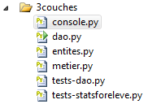
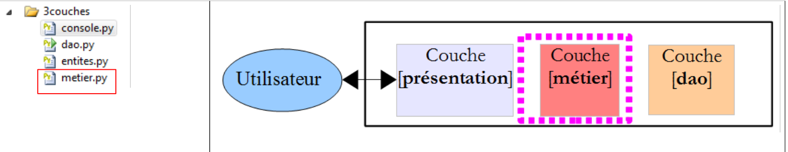
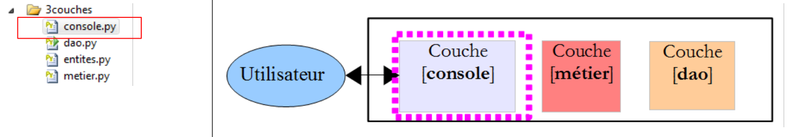

7. Schichtenarchitektur und Programmierung über Schnittstellen
7.1. Introduction
Wir wollen eine Anwendung schreiben, mit der die Noten der Schüler einer Mittelschule angezeigt werden können. Diese Anwendung wird eine mehrschichtige Architektur haben:
 |
- Die Schicht [présentation] ist die Schicht, die mit dem Benutzer der Anwendung in Kontakt steht.
- Die Schicht [metier] implementiert die Geschäftsregeln der Anwendung, wie beispielsweise die Berechnung eines Gehalts oder einer Rechnung. Diese Schicht nutzt Daten, die vom Benutzer über die Schicht [présentation] und von SGBD über die Schicht [dao] bereitgestellt werden.
- Die Schicht [dao] (Data Access Objects) verwaltet den Zugriff auf die Daten der Schicht SGBD.
Wir werden diese Architektur anhand einer einfachen Konsolenanwendung veranschaulichen:
- Es wird keine Datenbank geben,
- die Schicht [dao] verwaltet die Entitäten Eleve, Classe, Matiere und Note, mit denen die Noten der Schüler verwaltet werden können,
- die Schicht [métier] ermöglicht die Berechnung von Kennzahlen zu den Noten eines bestimmten Schülers,
- die Schicht [présentation] ist eine Konsolenanwendung, die die von der Schicht [métier] berechneten Ergebnisse anzeigt.
Das Visual Studio-Projekt der Anwendung lautet wie folgt:
 |
7.2. Die Entitäten der Anwendung
Entitäten sind Objekte. Wir haben hier vier Klassen für jede der Entitäten: Eleve, Classe, Matiere und Note.
 |
Die Datei [entites.py] umfasst vier Klassen.
Die Klasse [Classe] steht für eine Klasse der Mittelstufe:
class Classe:
# Konstruktor
def __init__(self,id,nom):
# Die Parameter werden gespeichert
self.id=id
self.nom=nom
# toString
def __str__(self):
return "Classe[{0},{1}]".format(self.id,self.nom)
- Zeilen 3–6: Eine Klasse wird durch eine Nummer id (Zeile 5) und eine nom (Zeile 6) definiert;
- Zeilen 9–10: Die Methode zur Anzeige der Klasse.
Die Klasse [Matiere] lautet wie folgt:
class Matiere:
# Hersteller
def __init__(self,id,nom,coefficient):
# Parameter werden gespeichert
self.id=id
self.nom=nom
self.coefficient=coefficient
# toString
def __str__(self):
return "Matiere[{0},{1},{2}]".format(self.id,self.nom,self.coefficient)
- Zeilen 3–7: Ein Fach wird durch seine Nummer (Zeile 5), seinen Namen (Zeile 6) und seinen Koeffizienten (Zeile 7) definiert;
- Zeilen 10–11: Die Anzeigemethode des Fachs.
Die Klasse [Eleve] lautet wie folgt:
class Eleve:
# Hersteller
def __init__(self,id,nom,prenom,classe):
# Parameter werden gespeichert
self.id=id
self.nom=nom
self.prenom=prenom
self.classe=classe
# toString
def __str__(self):
return "Eleve[{0},{1},{2},{3}]".format(self.id,self.prenom,self.nom,self.classe)
- Zeilen 3–8: Ein Schüler wird durch seine Nummer (Zeile 5), seinen Nachnamen (Zeile 6), seinen Vornamen (Zeile 7) und seine Klasse (Zeile 8) charakterisiert. Der letzte Parameter ist ein Verweis auf ein Objekt [Classe];
- Zeilen 11–12: Die Methode zur Anzeige des Schülers.
Die Klasse [Note] lautet wie folgt:
class Note:
# Hersteller
def __init__(self,id,valeur,eleve,matiere):
# Parameter werden gespeichert
self.id=id
self.valeur=valeur
self.eleve=eleve
self.matiere=matiere
# toString
def __str__(self):
return "Note[{0},{1},{2},{3}]".format(self.id,self.valeur,self.eleve,self.matiere)
- Zeilen 3–8: Ein Objekt [Note] wird durch seine Nummer (Zeile 5), den Notenwert (Zeile 6), eine Referenz auf den Schüler, der diese Note hat (Zeile 7), und eine Referenz auf das Fach, auf das sich die Note bezieht (Zeile 8), charakterisiert;
- Zeilen 11–12: Die Anzeigemethode des Objekts [Note].
7.3. Die Ebene [dao]
 |
Die Schicht [dao] stellt der Schicht [métier] folgende Schnittstelle zur Verfügung:
- getClasses gibt die Liste der Klassen der Mittelschule zurück;
- getMatieres gibt die Liste der Fächer zurück;
- getEleves gibt die Liste der Schüler zurück;
- getNotes gibt die Liste der Noten zurück.
Die Schicht [métier] wird ausschließlich diese Methoden verwenden. Sie muss nicht wissen, wie diese implementiert sind. Diese Daten können somit aus verschiedenen Quellen stammen (fest codiert, aus einer Datenbank, aus Textdateien usw.), ohne dass dies Auswirkungen auf die Schicht [métier] hat. Dies wird als Schnittstellenprogrammierung bezeichnet.
Die Klasse [Dao] implementiert diese Schnittstelle wie folgt:
# -*- coding=utf-8 -*-
# Import des Elementmoduls
from entites import *
class Dao:
# Konstruktor
def __init__(self):
# Die Klassen werden instanziiert
classe1=Classe(1,"classe1")
classe2=Classe(2,"classe2")
self.classes=[classe1,classe2]
# die Fächer
matiere1=Matiere(1,"matiere1",1)
matiere2=Matiere(2,"matiere2",2)
self.matieres=[matiere1,matiere2]
# die Schüler
eleve11=Eleve(11,"nom1","prenom1",classe1)
eleve21=Eleve(21,"nom2","prenom2",classe1)
eleve32=Eleve(32,"nom3","prenom3",classe2)
eleve42=Eleve(42,"nom4","prenom4",classe2)
self.eleves=[eleve11,eleve21,eleve32,eleve42]
# die Noten
note1=Note(1,10,eleve11,matiere1)
note2=Note(2,12,eleve21,matiere1)
note3=Note(3,14,eleve32,matiere1)
note4=Note(4,16,eleve42,matiere1)
note5=Note(5,6,eleve11,matiere2)
note6=Note(6,8,eleve21,matiere2)
note7=Note(7,10,eleve32,matiere2)
note8=Note(8,12,eleve42,matiere2)
self.notes=[note1,note2,note3,note4,note5,note6,note7,note8]
#-----------
# Schnittstelle
#-----------
# Liste der Klassen
def getClasses(self):
return self.classes
# Fächerliste
def getMatieres(self):
return self.matieres
# Liste der Schüler
def getEleves(self):
return self.eleves
# Notenliste
def getNotes(self):
return self.notes
- Zeile 4: Das Modul wird importiert, das die von der Schicht [dao] verarbeiteten Entitäten enthält;
- Zeile 8: Der Konstruktor hat keine Parameter. Er erstellt fest vier Listen:
- Zeilen 10–12: die Klassenliste;
- Zeilen 14–16: die Liste der Fächer;
- Zeilen 18–22: die Liste der Schüler;
- Zeilen 24–32: die Liste der Noten.
- Zeilen 39–52: Die vier Methoden der Schnittstelle der Schicht [dao] geben lediglich einen Verweis auf die vier vom Konstruktor erstellten Listen zurück.
Ein Testprogramm könnte wie folgt aussehen:
# -*- coding=utf-8 -*-
# Import des Entitätsmoduls und der Ebene [dao]
from entites import *
from dao import *
# Instanzierung der Ebene [dao]
dao=Dao()
# Liste der Klassen
for classe in dao.getClasses():
print classe
# Liste der Klassen
for matiere in dao.getMatieres():
print matiere
# Liste der Klassen
for eleve in dao.getEleves():
print eleve
# Klassenliste
for note in dao.getNotes():
print note
Die Kommentare sprechen für sich. Die Zeilen 11–24 nutzen die Schnittstelle der Schicht [dao]. Dabei werden keine Annahmen über die tatsächliche Implementierung der Schicht getroffen. In Zeile 8 wird die Schicht [dao] instanziiert. Hier werden Annahmen getroffen: Name der Klasse und Typ des Konstruktors. Es gibt Lösungen, mit denen sich diese Abhängigkeit vermeiden lässt.
Die Ergebnisse der Ausführung dieses Skripts lauten wie folgt:
7.4. Die Schicht [métier]
 |
Die Schicht [métier] implementiert die folgende Schnittstelle:
- getClasses gibt die Liste der Klassen der Mittelschule aus;
- getMatieres gibt die Liste der Fächer aus;
- getEleves gibt die Liste der Schüler aus;
- getNotes gibt die Liste der Noten aus;
- getStatsForEleve gibt die Noten des Schülers mit der Nummer idEleve sowie Informationen zu diesen Noten aus: gewichteter Durchschnitt, niedrigste Note, höchste Note.
Die Schicht [présentation] wird ausschließlich diese Methoden verwenden. Sie muss nicht wissen, wie diese implementiert sind.
Die Methode getStatsForEleve gibt ein Objekt vom Typ [StatsForEleve] wie folgt zurück:
class StatsForEleve:
# Hersteller
def __init__(self, eleve, notes):
# die Parameter werden gespeichert
self.eleve=eleve
self.notes=notes
# wird angehalten, wenn keine Notizen vorhanden sind
if len(notes)==0:
return
# Auswertung der Noten
sommePonderee=0
sommeCoeff=0
self.max=-1
self.min=21
for note in notes:
valeur=note.valeur
coeff=note.matiere.coefficient
sommeCoeff+=coeff
sommePonderee+=valeur*coeff
if valeur<self.min:
self.min=valeur
if valeur>self.max:
self.max=valeur
# Berechnung des Durchschnitts des Schülers
self.moyennePonderee=float(sommePonderee)/sommeCoeff
# toString
def __str__(self):
# Fall eines Schülers ohne Noten
if len(self.notes)==0:
return "Eleve={0}, notes=[]".format(self.eleve)
# Fall eines Schülers mit Noten
str=""
for note in self.notes:
str+="{0} ".format(note.valeur)
return "Eleve={0}, notes=[{1}], max={2}, min={3}, moyenne={4}".format(self.eleve, str, self.max, self.min, self.moyennePonderee)
- Zeile 3: Der Konstruktor erhält zwei Parameter:
- eine Referenz auf den Schüler vom Typ [Eleve], für den Indikatoren berechnet werden;
- eine Referenz auf dessen Noten, eine Liste von Objekten vom Typ [Note].
- Zeilen 8–9: Ist die Notenliste leer, wird der Vorgang nicht fortgesetzt.
- Andernfalls (Zeilen 11–25) werden die folgenden Kennzahlen berechnet:
- self.moyennePonderee: der mit den Fachkoeffizienten gewichtete Notendurchschnitt des Schülers;
- self.min: die niedrigste Note des Schülers;
- self.max: die höchste Note des Schülers.
- Zeile 28: Die Methode zur Anzeige der Klasse in der in Zeile 36 angegebenen Form.
Ein Testskript für diese Klasse könnte wie folgt aussehen:
# -*- coding=utf-8 -*-
# Import der Entitätsmodule, der Ebene [dao] und der Ebene [metier]
from entites import *
from dao import *
from metier import *
# eine Klasse
classe1=Classe(1,"6e A")
# ein Schüler in dieser Klasse
paul_durand=Eleve(1,"durand","paul",classe1)
# drei Fächer
maths=Matiere(1,"maths",1)
francais=Matiere(2,"francais",2)
anglais=Matiere(3,"anglais",3)
# Noten in diesen Fächern für den Schüler
note_maths=Note(1,10,paul_durand,maths)
note_francais=Note(2,12,paul_durand,francais)
note_anglais=Note(3,14,paul_durand,anglais)
# die Kennzahlen werden angezeigt
print StatsForEleve(paul_durand,[note_maths, note_francais,note_anglais])
Die Ausgabe auf dem Bildschirm sieht wie folgt aus:
Kehren wir zu unserer Schichtenarchitektur zurück:
 |
Die Klasse [Metier] implementiert die Schicht [métier] wie folgt:
class Metier:
# Ersteller
def __init__(self,dao):
# die Referenz wird auf der Ebene [dao] gespeichert
self.dao=dao
#-----------
# Schnittstelle
#-----------
# Kennzeichen zu den Noten
def getStatsForEleve(self,idEleve):
# Statistiken für den Schüler mit der Nr. idEleve
# Schüler suchen
trouve=False
i=0
eleves=self.getEleves()
while not trouve and i<len(eleves):
trouve=eleves[i].id==idEleve
i+=1
# Wurde er gefunden?
if not trouve:
raise RuntimeError("L'eleve [{0}] n'existe pas".format(idEleve))
else:
eleve=eleves[i-1]
# Liste aller Noten
notes=[]
for note in self.getNotes():
# Alle Noten des Schülers werden zu den Noten hinzugefügt
if note.eleve.id==idEleve:
notes.append(note)
# Das Ergebnis wird ausgegeben
return StatsForEleve(eleve,notes)
# die Liste der Klassen
def getClasses(self):
return self.dao.getClasses()
# die Liste der Fächer
def getMatieres(self):
return self.dao.getMatieres()
# die Liste der Schüler
def getEleves(self):
return self.dao.getEleves()
# die Liste der Noten
def getNotes(self):
return self.dao.getNotes()
- Zeilen 3–5: Der Konstruktor erhält eine Referenz auf die Schicht [dao]. Die Schicht [métier] muss über diese Referenz verfügen. Hier wird sie ihr über ihren Konstruktor übergeben. Man könnte sich auch andere Lösungen vorstellen. In einer horizontal dargestellten Schichtenarchitektur muss jede Schicht über eine Referenz auf die Schicht zu ihrer Rechten verfügen;
- Zeilen 36–49: Die Methoden getClasses, getMatieres, getEleves, getNotes beschränken sich darauf, den Aufruf an die gleichnamigen Methoden der Schicht [dao] weiterzuleiten;
- Zeile 12: Die Methode getStatsForEleve erhält als Parameter die Nummer des Schülers, für den Indikatoren zurückgegeben werden sollen.
- Zeile 17: Der Schüler wird in der Liste aller Schüler gesucht;
- Zeilen 18–20: die Suchschleife;
- Zeile 23: Wenn der Schüler nicht gefunden wurde, wird eine Ausnahme ausgelöst;
- ansonsten Zeile 25: Der gefundene Schüler wird gespeichert;
- Zeilen 28–31: Aus der Gesamtheit der Noten der Schule werden diejenigen gesucht, die zu dem gespeicherten Schüler gehören;
- sobald diese gefunden wurden, kann das angeforderte Objekt „StatsForEleve“ erstellt werden.
7.5. Die Ebene [console]
 |
Die Schicht [console] wird durch das folgende Skript implementiert:
# -*- coding=utf-8 -*-
# Import des Entitätsmoduls, des Moduls [dao] und des Moduls [metier]
from entites import *
from dao import *
from metier import *
# ----------- Ebene [console]
# Instanziierung der Ebene [metier]
metier=Metier(Dao())
# Anfrage/Antwort
fini=False
while not fini:
# Frage
print "numero de l'eleve (>=1 et * pour arreter) : "
# Antwort
reponse=raw_input()
# Fertig?
if reponse.strip()=="*":
break
# Ist die Eingabe korrekt?
ok=False
try:
idEleve=int(reponse,10)
ok=idEleve>=1
except:
pass
# Daten korrekt?
if not ok:
print "Saisie incorrecte. Recommencez..."
continue
# Berechnung
try:
print metier.getStatsForEleve(idEleve)
except RuntimeError,erreur:
print "L'erreur suivante s'est produite : {0}".format(erreur)
- Zeile 10: Instanziierung sowohl der Schichten [dao] als auch [métier]. Dies ist die einzige Abhängigkeit unseres Codes von der Implementierung dieser Schichten;
- Zeile 34: Es wird die Schnittstelle der Schicht [métier] verwendet;
- Zeile 19: Die Methode strip entfernt die Leerzeichen am Anfang und am Ende der Zeichenkette;
- Zeile 20: Mit break kann man eine Schleife verlassen;
- Zeile 24: Es wird versucht, die eingegebene Zeichenkette in eine Dezimalzahl zu konvertieren;
- Zeile 29: ok ist nur dann wahr, wenn Zeile 25 durchlaufen wurde;
- Zeile 31: Mit continue kann man in der Mitte der Schleife erneut in diese einsteigen;
- Zeile 34: Berechnung der Indikatoren;
- Zeile 35: Die Ausnahme RuntimeError, die aus der Ebene [métier] auftreten kann, wird abgefangen.
Hier ein Ausführungsbeispiel: